|
4-2-3-1
|
New Zealand | 1 | - | 5 | Belgium |
4-2-3-1
|
| HT 0-1 | ||||||
|
FIFA World CupSaturday 27 June 2026
|
||||||
- Venue
- BC Place Vancouver
- Attendance
- 52,497
- Referee
- Adham Mohammad Tumah Makhadmeh
- 2
Substitution46'
R. Thomas
B. Old
S. Singh
J. Randall
Yellow card46'
M. Stamenić
Yellow card56'
E. Just
- 2
Substitution64'
T. Payne
M. Boxall
J. Bell
C. McCowatt
Substitution79'
L. Cacace
F. de Vries
Goal84'
E. Just
Whistle45+7'
45+7'
Goal28'
L. Trossard
Goal50'
L. Trossard
Assist: H. Vanaken
Substitution56'
J. Doku
M. Fernandez-Pardo
Goal66'
K. De Bruyne
- 2
Substitution72'
L. Trossard
A. Saelemaekers
K. De Bruyne
A. Onana
- 2
Substitution85'
C. De Ketelaere
R. Lukaku
Y. Tielemans
N. Raskin
Goal86'
R. Lukaku
Assist: N. Raskin
Goal90+4'
A. Saelemaekers
Assist: R. Lukaku
New Zealand | |
|---|---|
Goalkeeper | |
| 1 | M. Crocombe |
Defender | |
| 2 | T. Payne 64' |
| 4 | T. Bindon |
| 13 | L. Cacace 79' |
| 16 | F. Surman |
Midfielder | |
| 6 | J. Bell 64' |
| 8 | M. Stamenić 46' |
| 10 | S. Singh 46' |
| 11 | E. Just 56'84' |
| 23 | R. Thomas 46' |
Forward | |
| 9 | C. Wood |
Substitutes | |
| 3 | F. de Vries 79' |
| 5 | M. Boxall 64' |
| 19 | B. Old 46' |
| 20 | C. McCowatt 64' |
| 21 | J. Randall 46' |
Belgium | |
Goalkeeper | |
| 1 | T. Courtois |
Defender | |
| 3 | A. Theate |
| 4 | B. Mechele |
| 5 | M. De Cuyper |
| 21 | T. Castagne |
Midfielder | |
| 7 | K. De Bruyne 66'72' |
| 8 | Y. Tielemans 85' |
| 10 | L. Trossard 28'50'72' |
| 11 | J. Doku 56' |
| 20 | H. Vanaken |
Forward | |
| 17 | C. De Ketelaere 85' |
Substitutes | |
| 9 | R. Lukaku 85'86' |
| 22 | A. Saelemaekers 72'90+4' |
| 23 | N. Raskin 85' |
| 24 | A. Onana 72' |
| 26 | M. Fernandez-Pardo 56' |


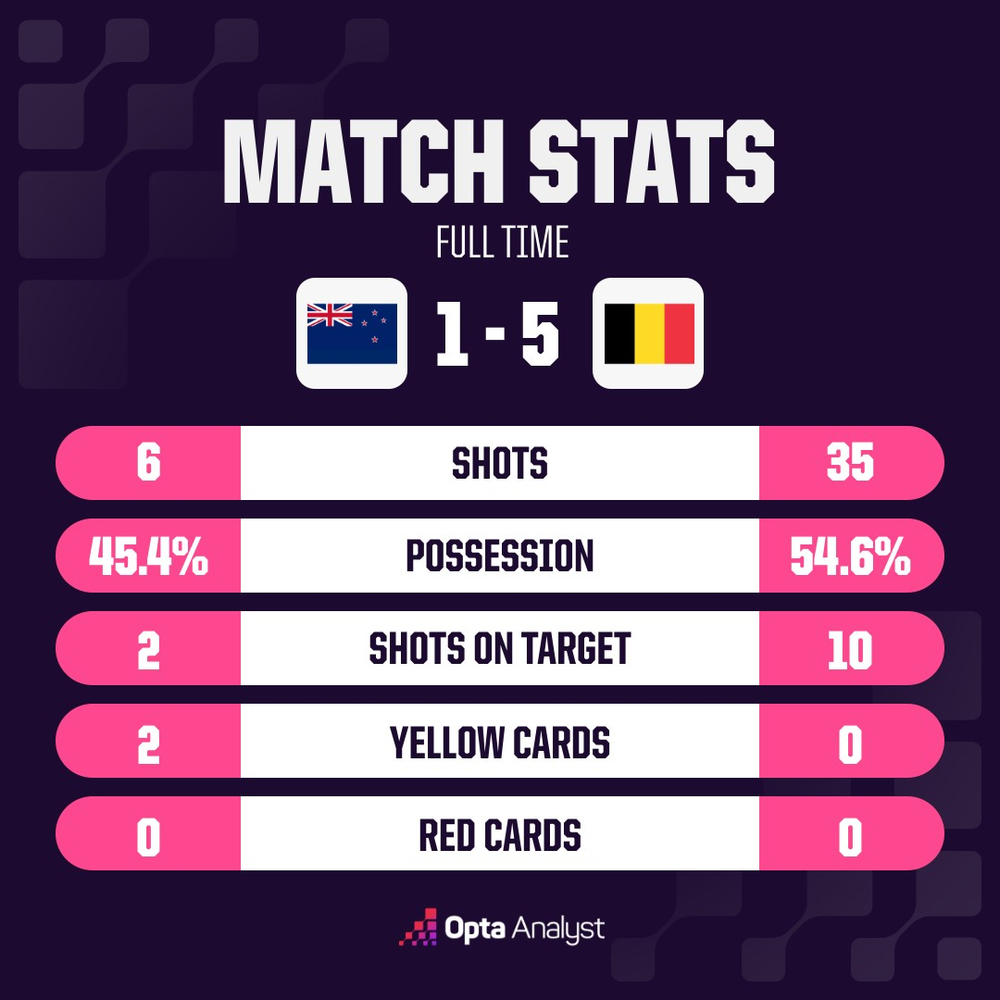
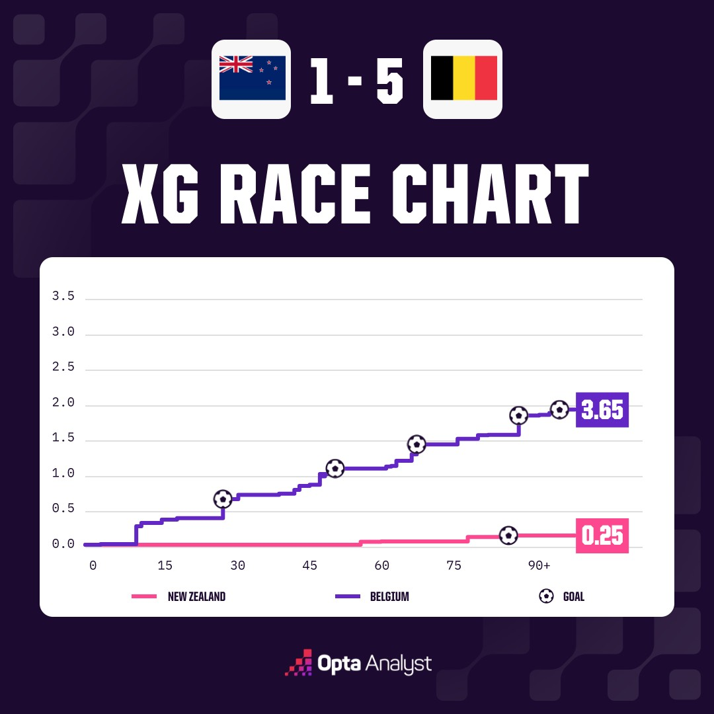
97'
New Zealand have failed to win in their last 9 games in the FIFA World Cup, their longest winless streak in the competition (since at least 1965/1966).
97'
Belgium are undefeated in their last 4 games in the FIFA World Cup, their last longer unbeaten streak was from 18th June 2018 to 6th July 2018, a run of 5 games.
97'
New Zealand attempted 6 shots in this game, their lowest total in a single match in the 2026 FIFA World Cup.
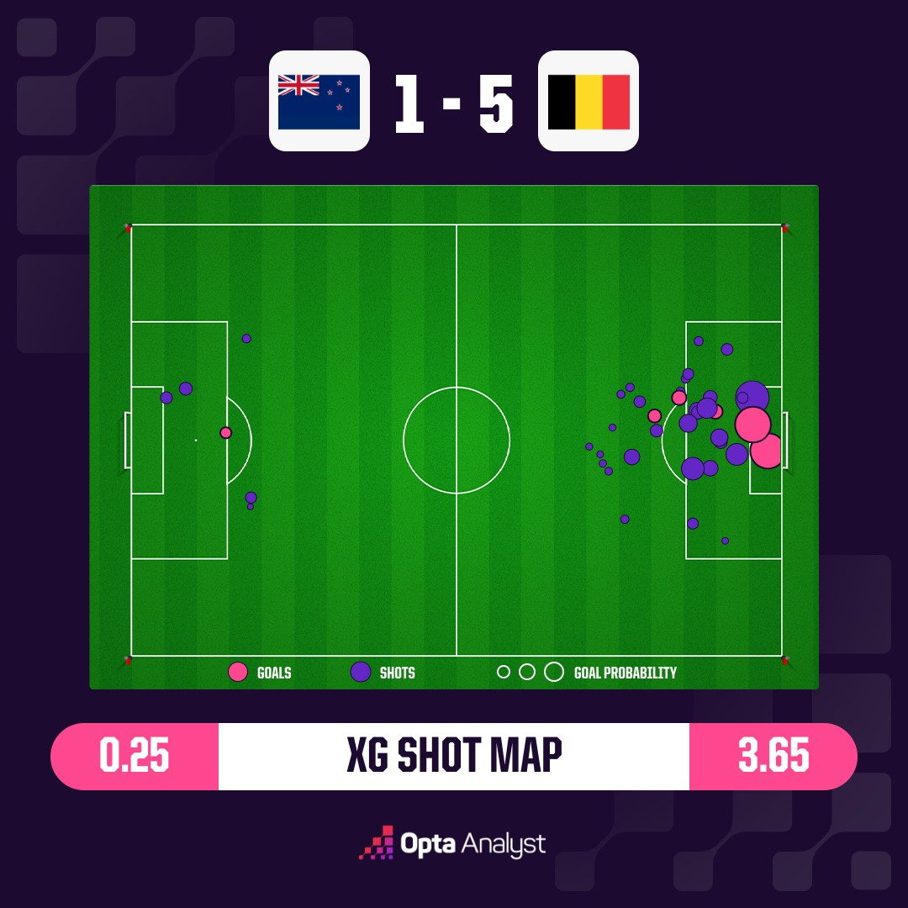
90+6'
FULL-TIME! The referee sounds the final whistle, and it’s all over. Belgium get the win, with a 1-5 triumph over New Zealand.
90+4'
Alexis Saelemaekers has scored his first goal in the 2026 FIFA World Cup.
90+4'
Romelu Lukaku has assisted his first goal in the 2026 FIFA World Cup.
90+4'
GOAL! It is 5-1 to Belgium now, with Alexis Saelemaekers having put them will in control. Is there any way back for New Zealand, or will Belgium see this one out with ease?
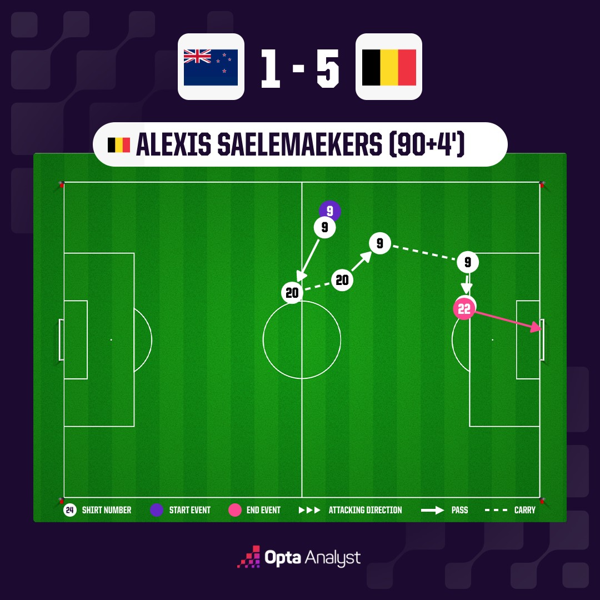
90+3'
MISS! A shot from Arthur Theate ends up being off target. They might have done a bit better with that one, but it remains Belgium 4-1 New Zealand.
90+2'
Max Crocombe has made 5 saves, his highest total in a single match in the FIFA World Cup.
90+2'
Corner now for Belgium, as they see a shot from Maxim De Cuyper deflected out of play for a set-piece. New Zealand have some defending to do, here. Could this result in a big opportunity?
90+2'
Hans Vanaken has created 5 chances, his highest total in a single match in the FIFA World Cup.
90+1'
MISS! A shot from Amadou Onana ends up being off target. They might have done a bit better with that one, but it remains Belgium 4-1 New Zealand.
90+1'
Good play from Alexis Saelemaekers, who draws a foul from Callum McCowatt to hand Belgium a free-kick in a dangerous position. Will they create something from this set-piece?
86'
Nicolas Raskin has assisted his first goal in the 2026 FIFA World Cup.
86'
Belgium have scored 4 goals in the FIFA World Cup game for the first time since 23rd June 2018 against Tunisia (W5-2).
86'
Romelu Lukaku has scored his sixth goal in the FIFA World Cup.
86'
GOAL! Romelu Lukaku scores, and Belgium are now well in front – surely they will go on and see this one out now? It seems a long way back for New Zealand, with Belgium well in control of this match.
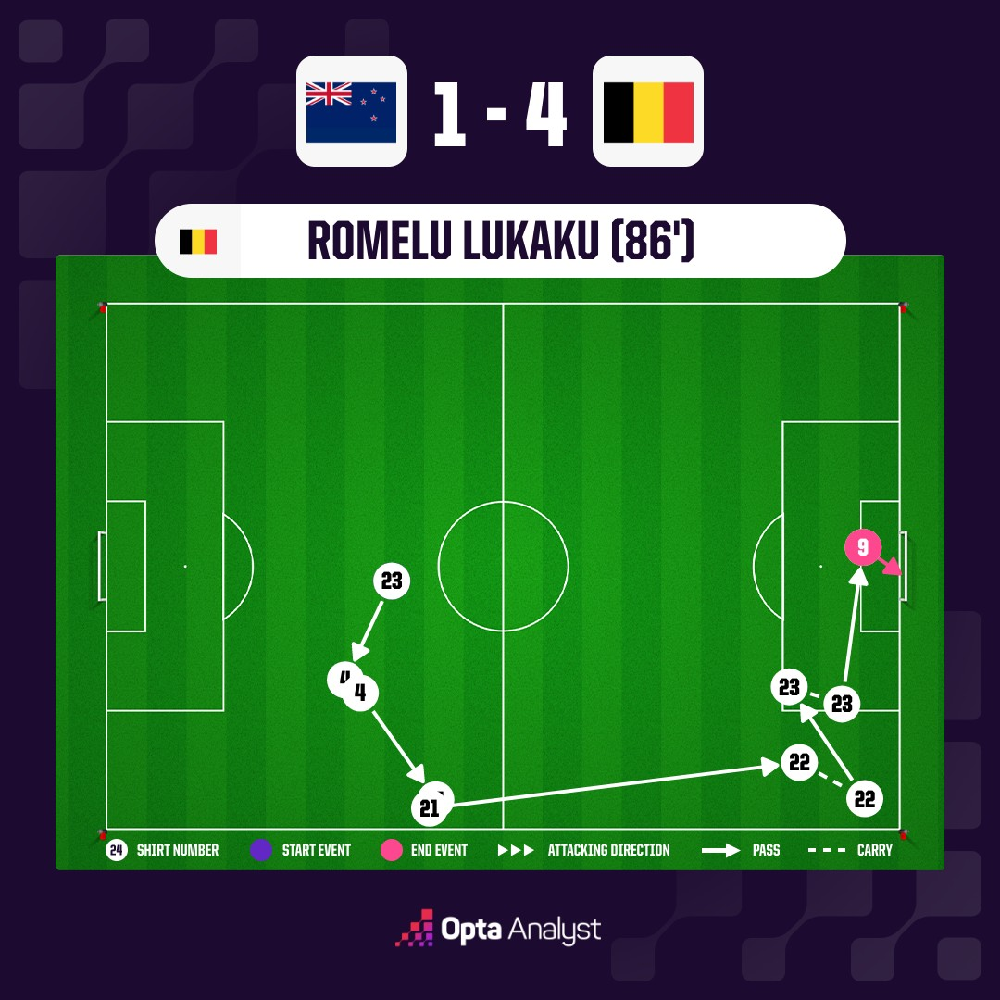
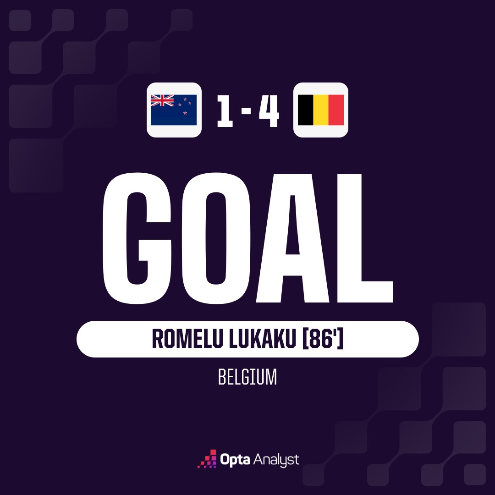
85'
Youri Tielemans’s match is over as Belgium decide to make a substitution. Nicolas Raskin enters the field in what looks like a tactical change.
85'
Romelu Lukaku is making his 15th appearance in the FIFA World Cup.
85'
A substitution for Belgium sees Charles De Ketelaere replaced by Romelu Lukaku. There does not appear to be any obvious sign of an injury, so that is a tactical switch.
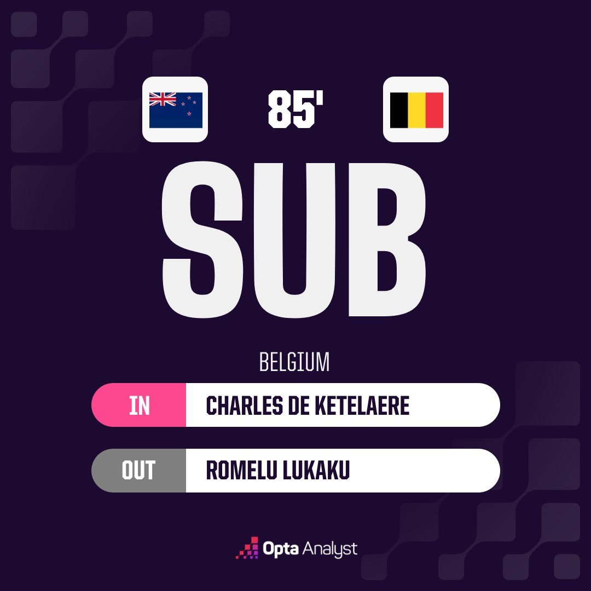
84'
Elijah Just has scored his third goal in the 2026 FIFA World Cup, netting for the first time since 16th June 2026 against IR Iran.
84'
GOAL! Elijah Just gets on the scoresheet to restore some pride – and potentially some hope – for New Zealand. They remain two goals behind in a match that is producing plenty of action.
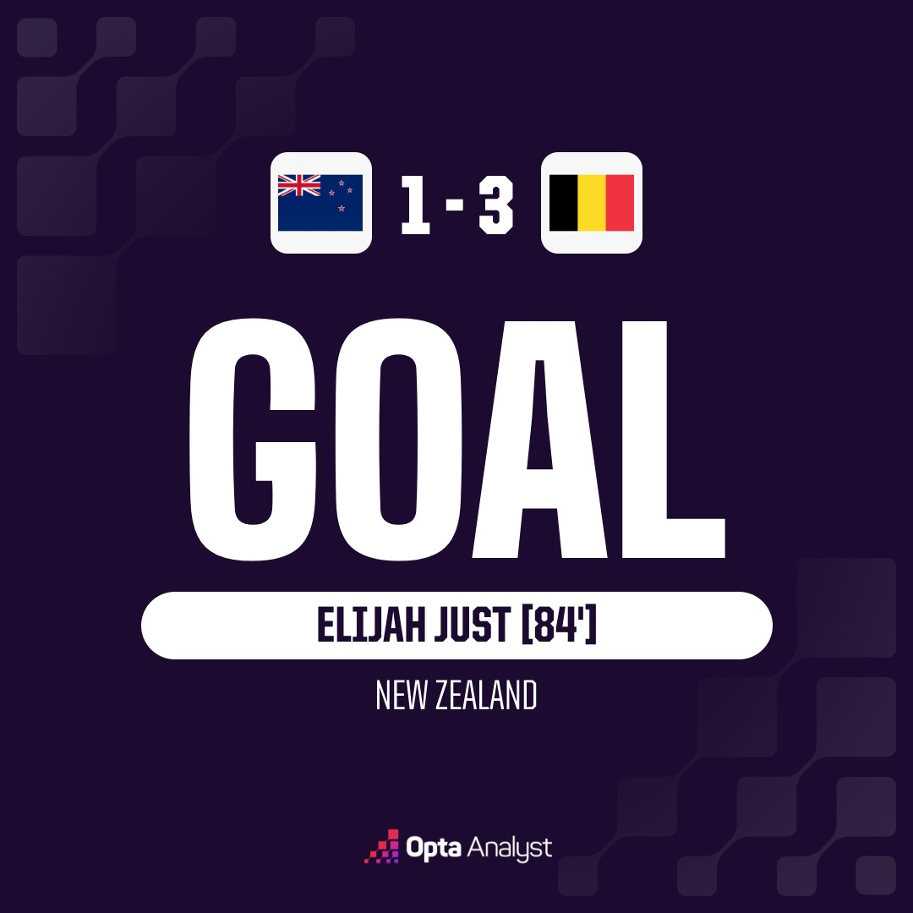
82'
Brandon Mechele goes in on Chris Wood and concedes a foul. The free-kick is not in a particularly dangerous area from Belgium’s viewpoint, though.
80'
That is a disappointing effort from Alexis Saelemaekers, who went for glory but got their attempt wrong, and the shot sailed off target. A frustrating moment for Belgium.
79'
It’s backs to the wall now — Belgium throwing everything into defending their advantage, with a flurry of crucial interventions.
79'
Substitution! Francis de Vries replaces Liberato Cacace for New Zealand as the manager shuffles the pack. Can Francis de Vries make an impression as this match continues?
78'
No luck! Maxim De Cuyper takes on a shot that, had they got it right, might have been set to test the goalkeeper, but instead it is sent off target and New Zealand come away unscathed.
77'
Good play from Alexis Saelemaekers, who draws a foul from Marko Stamenić to hand Belgium a free-kick in a dangerous position. Will they create something from this set-piece?
76'
MISS! The score remains 0-3, with Belgium relieved after New Zealand’s Tyler Bindon goes for goal but sends their attempt off target. Not one to write home about, that one.
76'
Corner now for New Zealand, as they see a shot from Elijah Just deflected out of play for a set-piece. Belgium have some defending to do, here. Could this result in a big opportunity?
76'
Despite the early setback, New Zealand are beginning to find some rhythm. Can they turn this possession into pressure?
76'
Belgium have had more of the ball with 75 minutes played, with 56.89% possession compared to New Zealand’s 43.11%. That is not likely to change too much in the final 15 minutes.
74'
BLOCK! An intervention from Finn Surman might have just prevented a goal, with the defending player getting in the way of an attempt from Amadou Onana. Solid defending there!
74'
Great block from Finn Surman, as they get in the way of an attempt from Matias Fernandez-Pardo that might have been set to cause the goalkeeper some problems. Solid defending from the New Zealand player.
73'
Offside! Alexis Saelemaekers thought they were through on goal, but the New Zealand defence stepped up in time to catch them offside, and the assistant referee puts their flag up.
72'
A rash challenge from Michael Boxall, who sends Charles De Ketelaere tumbling, giving Belgium a free-kick. It is not in a threatening position, but it gives them a chance to get back on the ball.
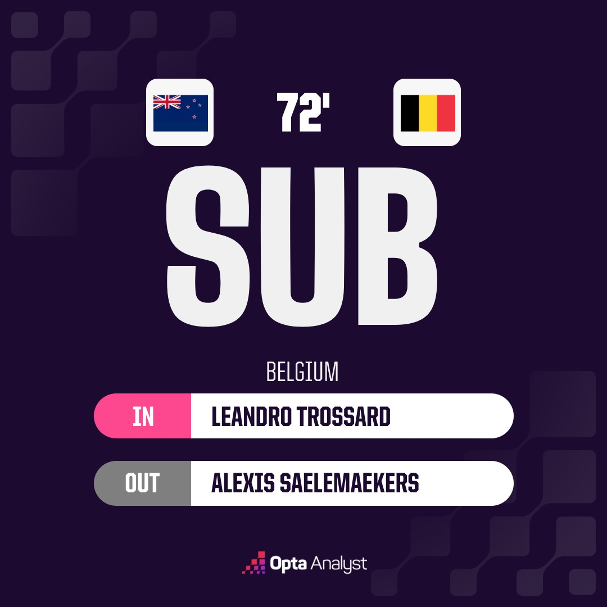
72'
Substitution! Amadou Onana replaces Kevin De Bruyne for Belgium as the manager shuffles the pack. Can Amadou Onana make an impression as this match continues?
72'
A substitution for Belgium sees Leandro Trossard replaced by Alexis Saelemaekers. There does not appear to be any obvious sign of an injury, so that is a tactical switch.
69'
A foul from Callum McCowatt on Youri Tielemans sees Belgium win a free-kick, but it is not in a dangerous position, so New Zealand should be confident they can defend it easily enough.
66'
Belgium have scored 3 goals in the FIFA World Cup game for the first time since 2nd July 2018 against Japan (W3-2).
66'
Kevin De Bruyne! That is another goal for Belgium, who now lead 3-0! Is there any way back into this one for New Zealand? Their prospects look bleak, unless they can find a swift response.
66'
Kevin De Bruyne has scored his first goal in the 2026 FIFA World Cup, netting for the first time since 6th July 2018 against Brazil.
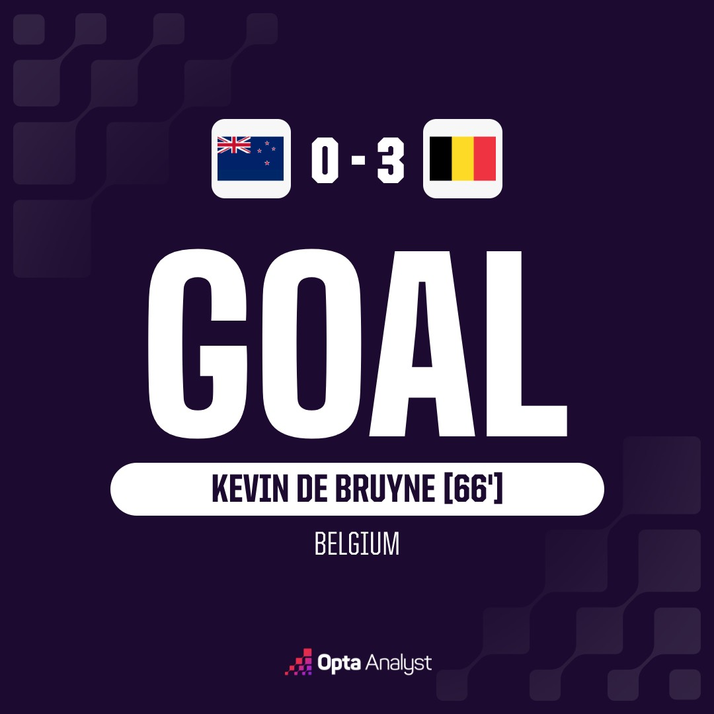
66'
That might have been going in! A fantastic block from Marko Stamenić, who gets in the way of a goal-bound effort from Kevin De Bruyne. Would the goalkeeper have been beaten? We will never know.
66'
With 65 minutes gone, it is New Zealand who lead the shot count, with 3 to Belgium’s 24. New Zealand have got , while Belgium have managed to get 6 on target.
65'
What a miss! That is a bad finish from Matias Fernandez-Pardo, who has been unable to convert from a good opportunity, seeing a big chance for Belgium to extend their lead go begging. Will New Zealand make them pay for that profligacy?
65'
It’s backs to the wall now — Belgium throwing everything into defending their advantage, with a flurry of crucial interventions.
64'
The New Zealand manager is looking to the substitutes’ bench, bringing on Callum McCowatt in place of Joe Bell. Will the change make a difference? Let’s find out!
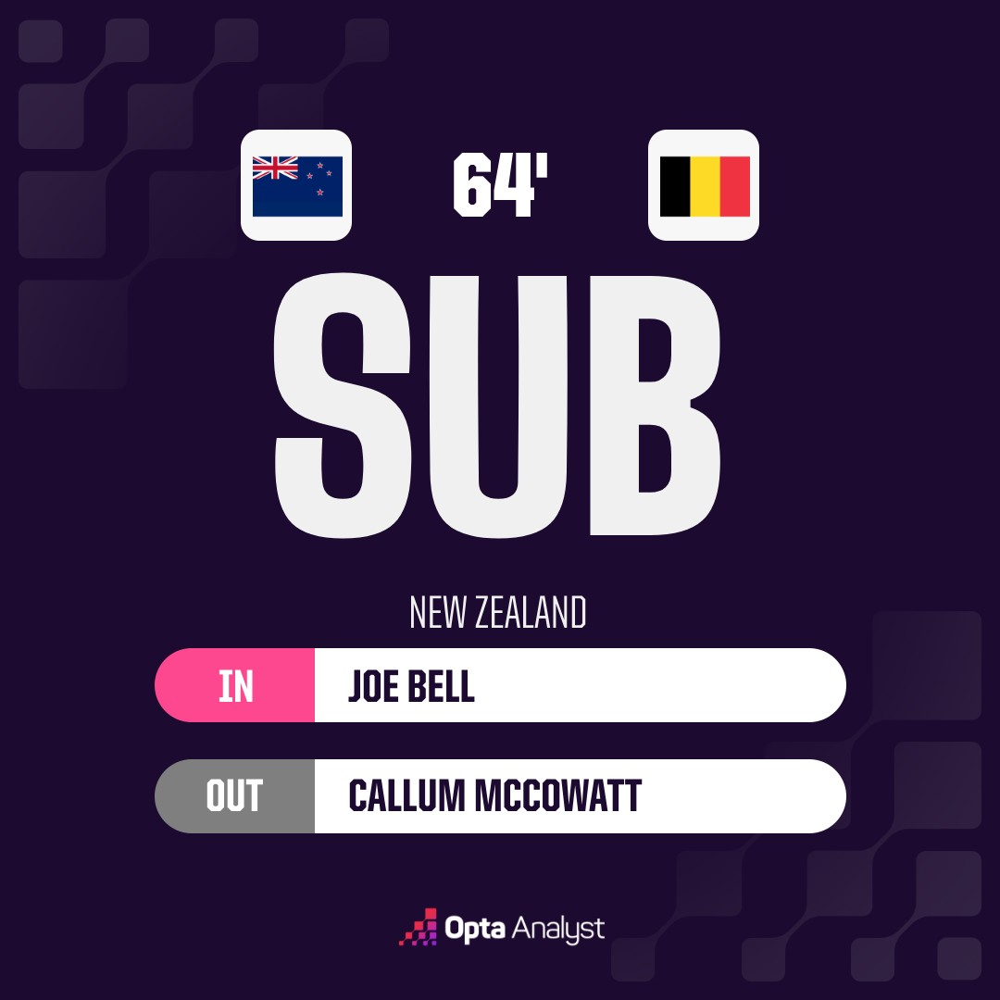
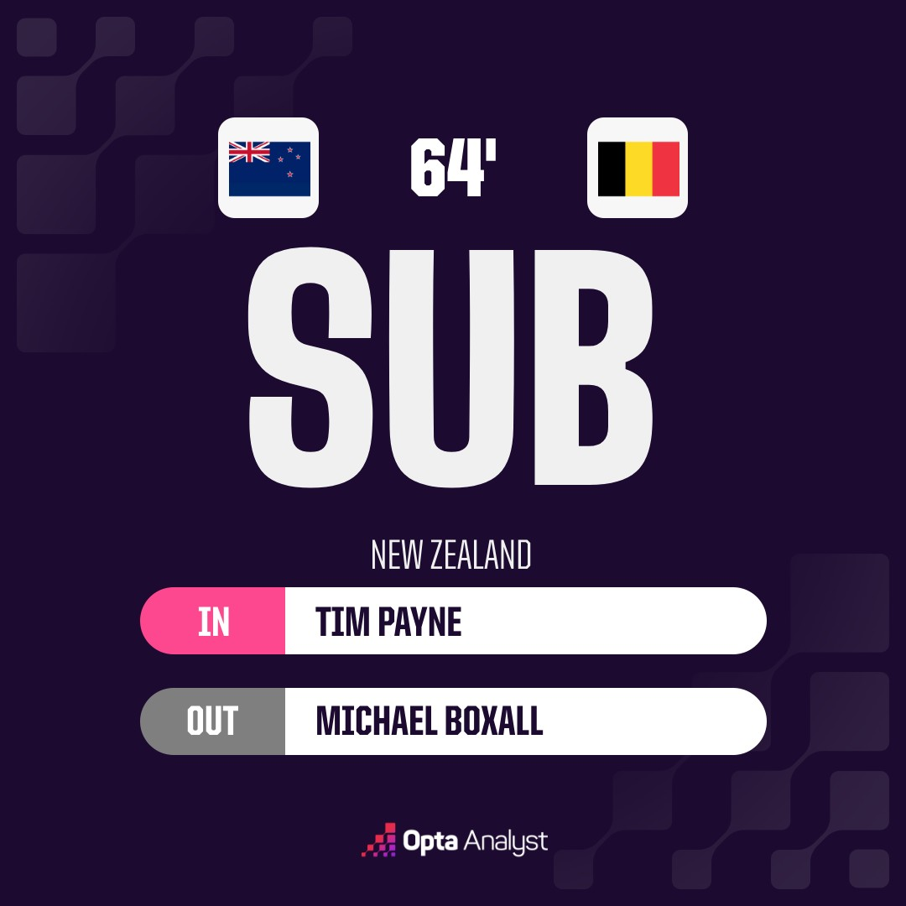
64'
New Zealand are making a tactical change. Tim Payne is leaving the field and in their place comes Michael Boxall – we will soon see if this switch has the desired impact.
62'
Kevin De Bruyne has attempted 5 shots, the first time he has attempted at least 5 shots in a match in the FIFA World Cup since facing IR Iran on 21st June 2026 (5 shots).
62'
Kevin De Bruyne's effort is deflected out for a corner. Can Belgium make anything of this set-piece?
62'
CLOSE! Arthur Theate gets into a decent shooting position inside the New Zealand area, and manages to find space to get an effort off. However, Max Crocombe is equal to it.
61'
New Zealand have a corner to defend now after Ben Old diverts an attempt from Kevin De Bruyne out of play. Can Belgium take this chance to get a good delivery in and really test their opponent’s defence?
60'
Free-kick! A foul from Brandon Mechele on Jesse Randall. It is well away from Belgium’s goal, so it is unlikely to result in a chance for New Zealand.
60'
No luck! Arthur Theate takes on a shot that, had they got it right, might have been set to test the goalkeeper, but instead it is sent off target and New Zealand come away unscathed.
59'
No luck! Jesse Randall takes on a shot that, had they got it right, might have been set to test the goalkeeper, but instead it is sent off target and Belgium come away unscathed.
57'
A free-kick to New Zealand, as Charles De Ketelaere goes in and fouls Liberato Cacace. However, Belgium will not mind giving one away in this area too much, with plenty of distance to their goal.
56'
Substitution! Matias Fernandez-Pardo replaces Jérémy Doku for Belgium as the manager shuffles the pack. Can Matias Fernandez-Pardo make an impression as this match continues?
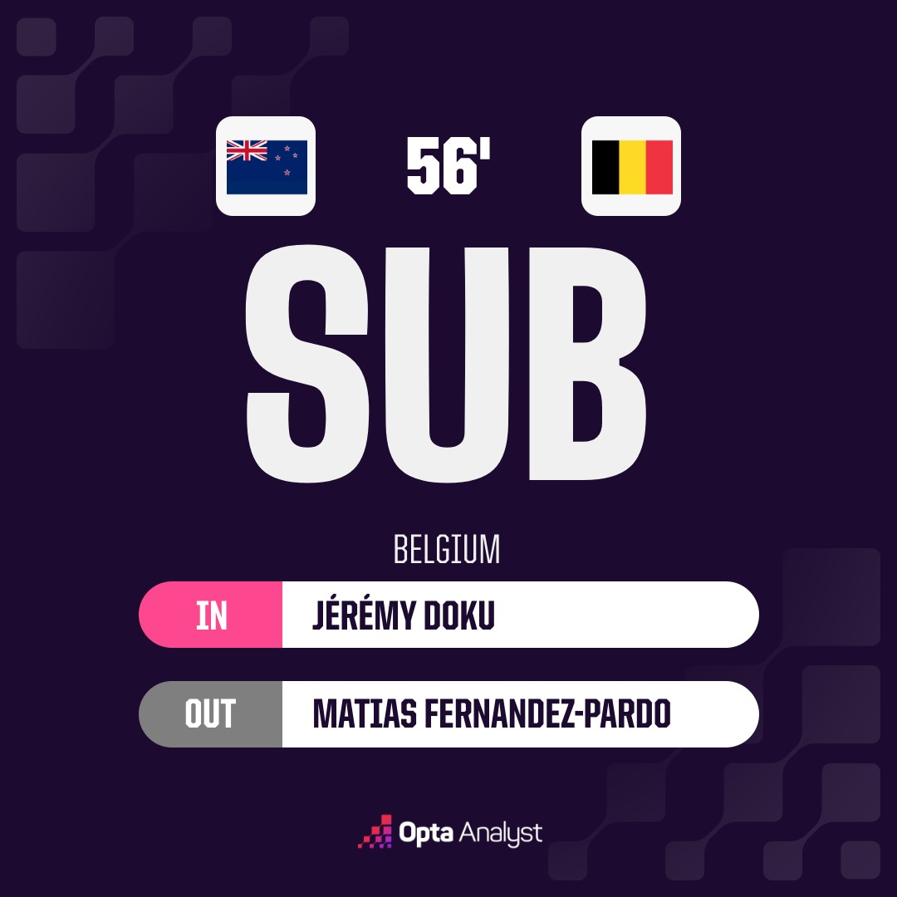
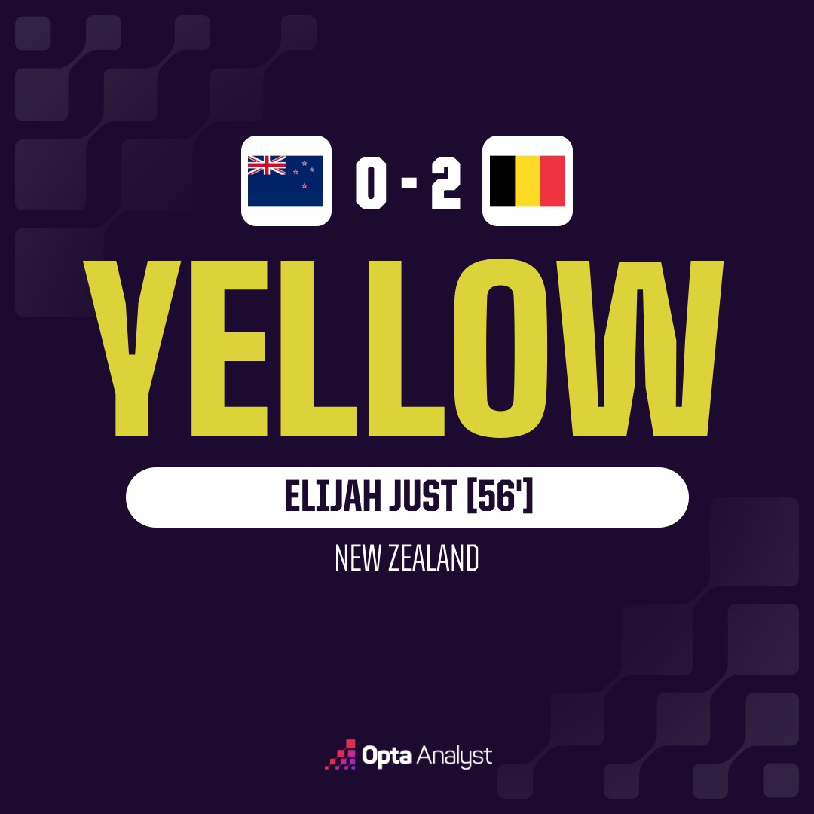
56'
Yellow card! Elijah Just will have to be careful from now on after they are cautioned.
56'
A free-kick to Belgium, as Elijah Just goes in and fouls Leandro Trossard. However, New Zealand will not mind giving one away in this area too much, with plenty of distance to their goal.
56'
Great defending from Belgium, who are staying organised and winning key battles to preserve their lead.
55'
A chance goes begging as Tim Payne gets off a shot that does not hit the target. They might have done better with that one, but instead it is a goal-kick to Belgium.
55'
That was hopeful! A bit of a punt from Elijah Just, who goes for goal from distance, but Thibaut Courtois makes the save.
54'
A foul from Charles De Ketelaere on Tim Payne sees New Zealand win a free-kick, but it is not in a dangerous position, so Belgium should be confident they can defend it easily enough.
50'
Hans Vanaken has assisted his first goal in the 2026 FIFA World Cup.
50'
Leandro Trossard! That is another goal for Belgium, who now lead 2-0! Is there any way back into this one for New Zealand? Their prospects look bleak, unless they can find a swift response.
50'
Leandro Trossard has scored his second goal of the 2025 FIFA World Cup this edition, more than any other Belgium player.
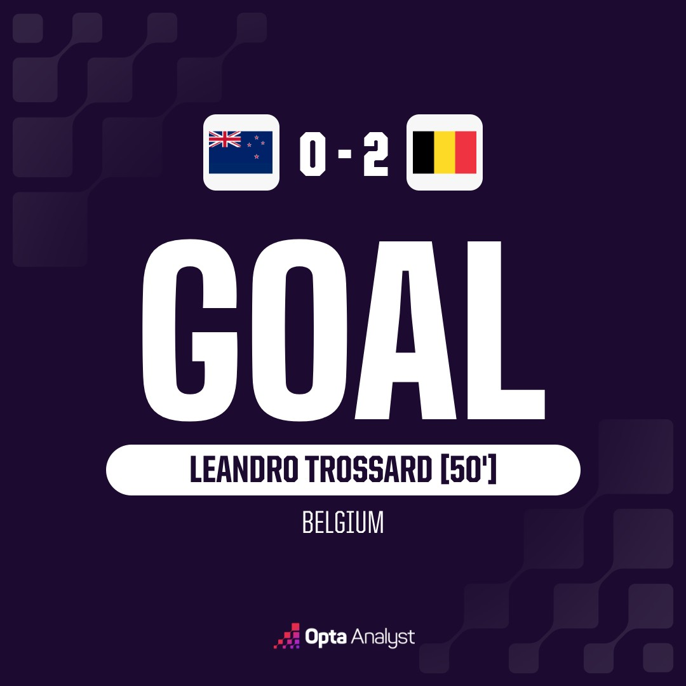
48'
Excellent defensive work from Belgium; their organization and success in key duels are effectively safeguarding their lead.
47'
MISS! A shot from Kevin De Bruyne ends up being off target. They might have done a bit better with that one, but it remains Belgium 1-0 New Zealand.
46'
Yellow card! Marko Stamenić will have to be careful from now on after they are cautioned.
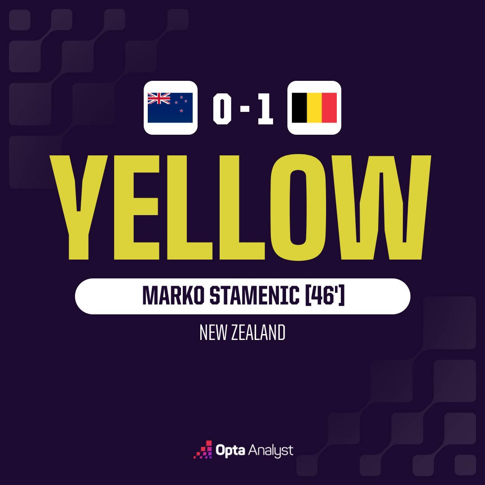
46'
Free-kick! A foul from Marko Stamenić on Youri Tielemans. It is well away from New Zealand’s goal, so it is unlikely to result in a chance for Belgium.
46'
The New Zealand manager is looking to the substitutes’ bench, bringing on Jesse Randall in place of Sarpreet Singh. Will the change make a difference? Let’s find out!
46'
Ryan Thomas’s match is over as New Zealand decide to make a substitution. Ben Old enters the field in what looks like a tactical change.
45+7'
Half-time! The referee blows the whistle and it is time for the interval. As we reach the break it is New Zealand 0-1 Belgium at BC Place Vancouver.
45+6'
A rash challenge from Leandro Trossard, who sends Finn Surman tumbling, giving New Zealand a free-kick. It is not in a threatening position, but it gives them a chance to get back on the ball.
45+5'
A rash challenge from Ryan Thomas, who sends Youri Tielemans tumbling, giving Belgium a free-kick. It is not in a threatening position, but it gives them a chance to get back on the ball.
45+5'
Despite trailing, New Zealand are showing real defensive grit, digging in and stopping further damage as they try to build a platform.
45+3'
No luck! Timothy Castagne takes on a shot that, had they got it right, might have been set to test the goalkeeper, but instead it is sent off target and New Zealand come away unscathed.
45+2'
That is a disappointing effort from Arthur Theate, who went for glory but got their attempt wrong, and the shot sailed off target. A frustrating moment for Belgium.
45+2'
Hans Vanaken's effort is deflected out for a corner. Can Belgium make anything of this set-piece?
45+1'
Despite trailing, New Zealand are showing real defensive grit, digging in and stopping further damage as they try to build a platform.
45+1'
Leandro Trossard has attempted 5 shots, his highest total in a single match in the FIFA World Cup.
45+1'
That might have been going in! A fantastic block from Marko Stamenić, who gets in the way of a goal-bound effort from Leandro Trossard. Would the goalkeeper have been beaten? We will never know.
43'
CLOSE! Charles De Ketelaere gets into a decent shooting position inside the New Zealand area, and manages to find space to get an effort off. However, Max Crocombe is equal to it.
42'
A chance goes begging as Kevin De Bruyne gets off a shot that does not hit the target. They might have done better with that one, but instead it is a goal-kick to New Zealand.
41'
New Zealand have not had a shot so far in this game.
39'
That is a disappointing effort from Jérémy Doku, who went for glory but got their attempt wrong, and the shot sailed off target. A frustrating moment for Belgium.
37'
Excellent defensive work from Belgium; their organization and success in key duels are effectively safeguarding their lead.
34'
Youri Tielemans goes in on Ryan Thomas and concedes a foul. The free-kick is not in a particularly dangerous area from Belgium’s viewpoint, though.
33'
A rash challenge from Finn Surman, who sends Jérémy Doku tumbling, giving Belgium a free-kick. It is not in a threatening position, but it gives them a chance to get back on the ball.
32'
Great defending from Belgium, who are staying organised and winning key battles to preserve their lead.
31'
Great block from Sarpreet Singh, as they get in the way of an attempt from Hans Vanaken that might have been set to cause the goalkeeper some problems. Solid defending from the New Zealand player.
30'
Corner! New Zealand are pushing for a goal and now they have an opportunity from this set-piece.
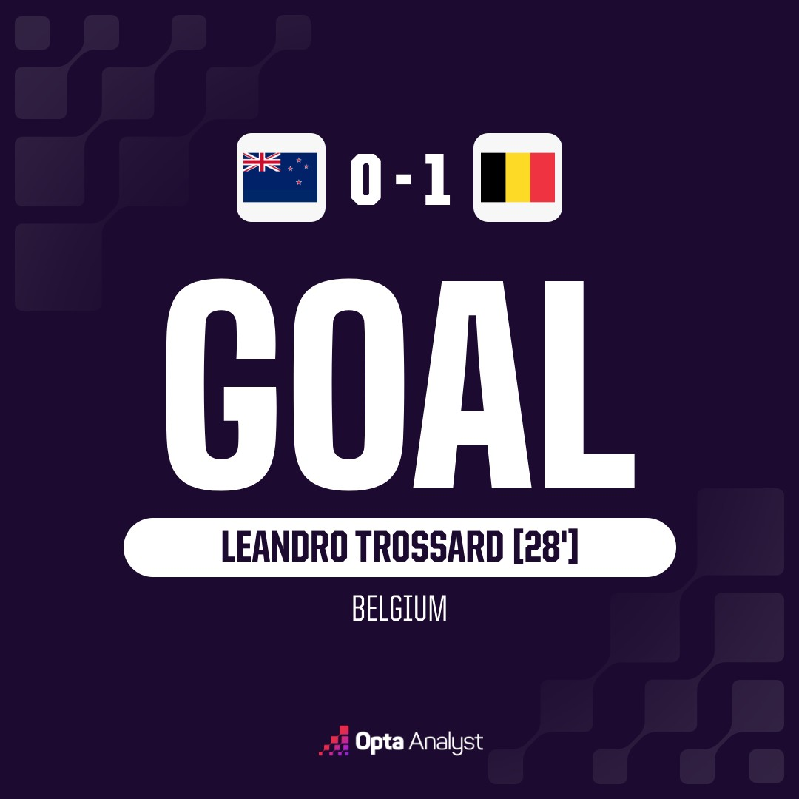
28'
Belgium have avoided defeat in their last 18 matches when scoring first in the FIFA World Cup, since a 2-4 loss to France on 28th June 1986.
28'
GOAL! Belgium move in front! Leandro Trossard provides the decisive touch from inside the penalty area to leave New Zealand chasing the game. It is too early to predict whether that will prove the winner, but as things stand Belgium have the advantage!
28'
Leandro Trossard has scored his first goal in the 2026 FIFA World Cup.
27'
It is a corner now to Belgium, with New Zealand somewhat hanging on here as they look to hold out for a positive result. Can Belgium make something of this set-piece opportunity?
27'
A free-kick to Belgium, as Tyler Bindon goes in and fouls Hans Vanaken. However, New Zealand will not mind giving one away in this area too much, with plenty of distance to their goal.
23'
A free-kick to Belgium, as Chris Wood goes in and fouls Hans Vanaken. However, New Zealand will not mind giving one away in this area too much, with plenty of distance to their goal.
21'
VAR overturns the decision! The video official sees enough reason for the original call to be overturned, and so elects to intervene here.
21'
This decision may not stand, as it is going to VAR. The referee has stopped the play while his video assistant reviews the incident.
19'
Great block from Finn Surman, as they get in the way of an attempt from Leandro Trossard that might have been set to cause the goalkeeper some problems. Solid defending from the New Zealand player.
17'
Corner! The ball goes behind and now Belgium will aim to deliver a good ball into the penalty area and test that New Zealand defence, which has been frustrating them in recent minutes.
16'
SHOT! Jérémy Doku manages to get a shot off from inside the area, but although it was heading in, they cannot get enough on it to beat Max Crocombe, who makes the save.
16'
That might have been going in! A fantastic block from Sarpreet Singh, who gets in the way of a goal-bound effort from Leandro Trossard. Would the goalkeeper have been beaten? We will never know.
16'
In the last 15 minutes, it is Belgium who have dominated the ball, having seen 75.76% of the possession, yet they have not been able to go and turn that into a goal just yet, with their opponents standing firm.
12'
Save! A long-range strike from Kevin De Bruyne was heading in, but Max Crocombe got to it to parry it away from danger.
12'
BLOCKED! That was close. Brandon Mechele got off a shot, which was heading in, but Tyler Bindon was on hand to make a vital intervention. Great block!
11'
MISS! How has that not gone in? A complete lack of composure shown from Leandro Trossard, who squanders a golden chance for Belgium, whose coach looks on frustrated from the touchline. A real let off for New Zealand!
5'
The Belgium defence steps up in time and there is a frustration for Chris Wood, who thought they were through until the flag goes up to signal offside.
4'
That is a disappointing effort from Youri Tielemans, who went for glory but got their attempt wrong, and the shot sailed off target. A frustrating moment for Belgium.
3'
It’s been tight so far, and New Zealand are making sure it stays that way with strong defensive discipline and well-timed clearances.
1'
And we are off! Strap in, folks, for this mouthwatering encounter between Belgium and New Zealand at BC Place Vancouver.
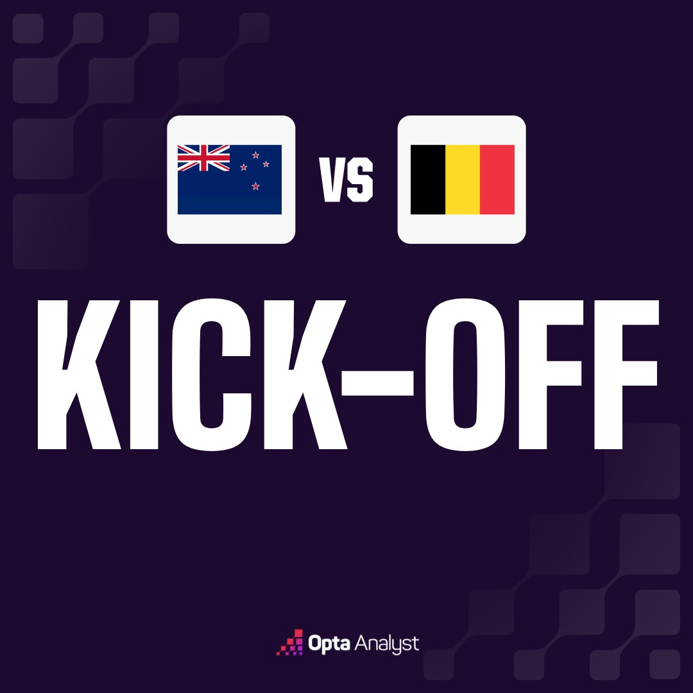
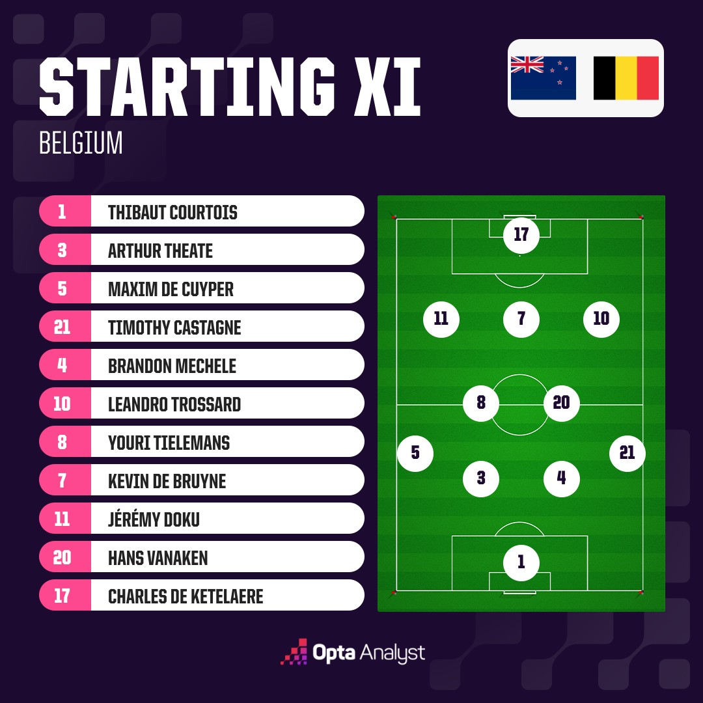
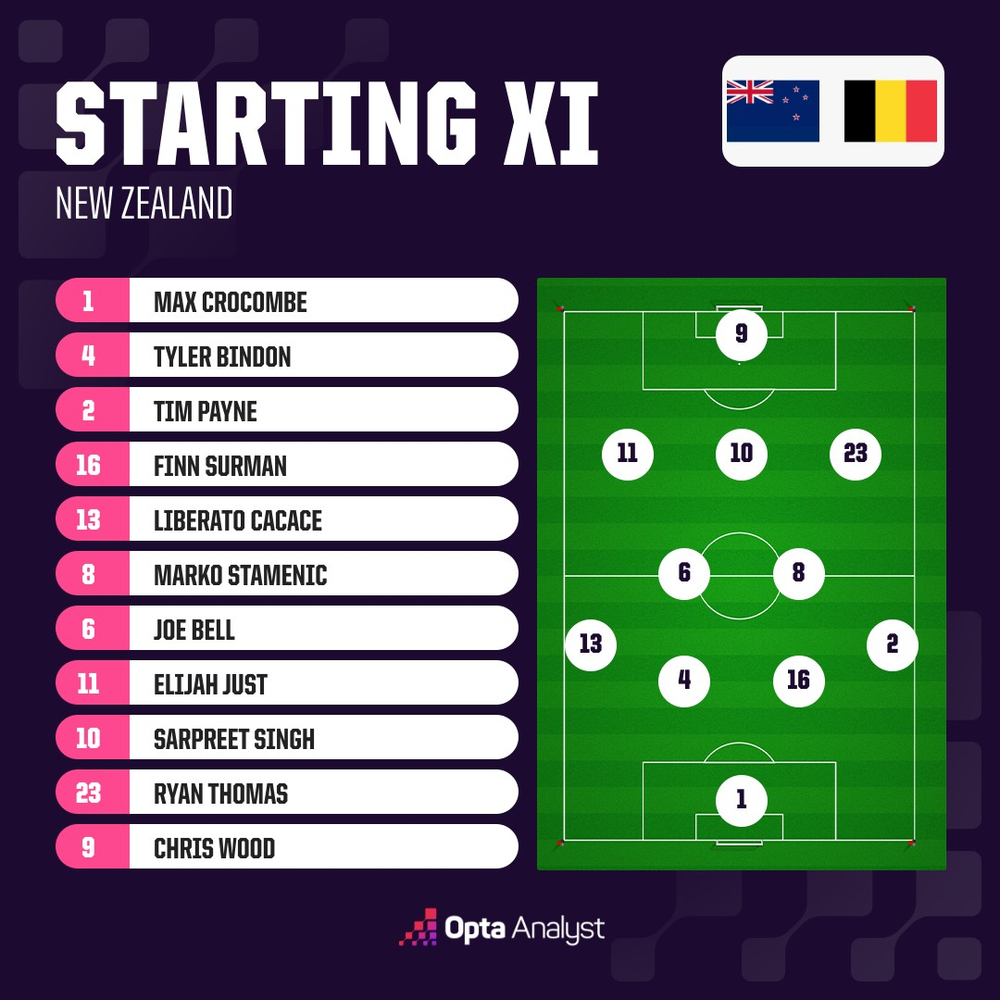
Kevin De Bruyne is making his 16th appearance in the FIFA World Cup.
Thibaut Courtois is making his 18th appearance in the FIFA World Cup.
There have been 3 or more goals scored in each of New Zealand's last 11 games
There have been 3 or more goals scored in total in each of New Zealand's last 7 home games
New Zealand take on Belgium on Friday at BC Place Vancouver in the third round of the group stage at the 2026 Canada/Mexico/USA FIFA World Cup.
New Zealand's last group stage match saw them beaten for the first time in the competition this season 3-1 by Egypt on June 21. Finn Surman was on the scoresheet in the loss. They are winless in their last four games in all competitions. In six games this year, they have one win, one draw, and four losses.
Belgium played out a 0-0 draw against IR Iran in their last game, a June 21 group stage clash at Los Angeles Stadium, extending their unbeaten streak to 15.
Belgium are third in the group on two points, while New Zealand's one point places them fourth. Belgium are currently out of the knockout round places but still on for a place in the round of 32, while New Zealand are facing elimination.
Atop the group on four points are Egypt, who are well-positioned to advance to the Round of 32. IR Iran are also in a Round of 32 spot, sitting second on two points.
In attack, Elijah Just has been a key player for New Zealand in World Cup play. He is the side's top scorer with two goals, one of those having been the tone-setting first of the match.
In their last six matches in all competitions, New Zealand have won one, drawn one and lost four. The New Zealander side scored seven and conceded 13 over that period, scoring first in three of the six contests. A majority of their goals (four) came in the first half, while their opponents netted four times in the first 45 minutes. The Belgian side have won three and drawn three in their last six. The Belgian side scored 14 and conceded four over that period, netting first in two of the six. They had three goals in the first half, while their opponents netted three times before the break.
-
General
Possession 45.5% 45.52754.47354.5% Possession lost in defensive half 33 331919 Possession lost in middle third 47 472828 Duels 70 707373 Duels success rate 44.3% 44.28652.05552.1% Aerial duels 15 151515 Aerial duels won 46.7% 46.66753.33353.3% Successful dribbles 8 877 Fouls won 7 71010 Offsides 1 111 Corner awarded 5 588 -
Distribution
Passes 436 436525525 Long passes 38 384646 Long passes proportion (%) 8.7% 8.7168.7628.8% Passing accuracy 84.6% 84.6338888.0% Passes in opponents' half 194 194325325 Passing accuracy in opponents' half (%) 77.3% 77.3283.38583.4% Total passes in the final third 82 82192192 Passing accuracy in final third (%) 70.7% 70.73279.68879.7% Forward passes 282 282304304 Forward passes (%) 64.7% 64.67957.90557.9% Through balls 1 133 Final third entries 37 374949 Penalty area entries 28 284242 Total open play crosses 12 121313 Crosses 17 171616 Crossing accuracy 11.8% 11.76537.537.5% -
Attack
Goals 1 155 Shots 6 63535 Shots on target 2 21010 Blocked shots 1 11212 Headed shots 1 144 Shots outside the box 3 31212 Shots inside the box 3 32323 Shots accuracy excluding blocked shots 40.0% 4043.47843.5% Shooting accuracy 33.3% 33.33328.57128.6% Key Passes 3 32828 -
Defence
Tackles 10 101313 Tackles success rate 60.0% 6061.53861.5% Clearances 35 352727 Interceptions 6 61010 Recoveries 38 384848 Attacking third recovery 2 211 Defensive third recovery 27 272424 Midfield third recovery 9 92323 Recoveries in attacking half (%) 5.3% 5.2632.0832.1% -
Discipline
Fouls conceded 10 1077 Yellow cards 2 200 Red cards 0 000